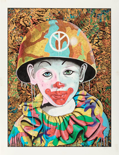
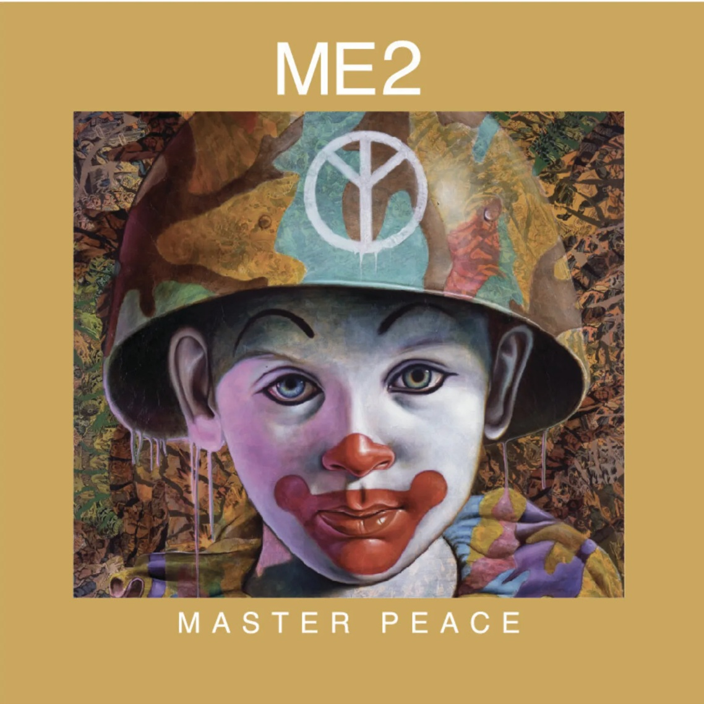
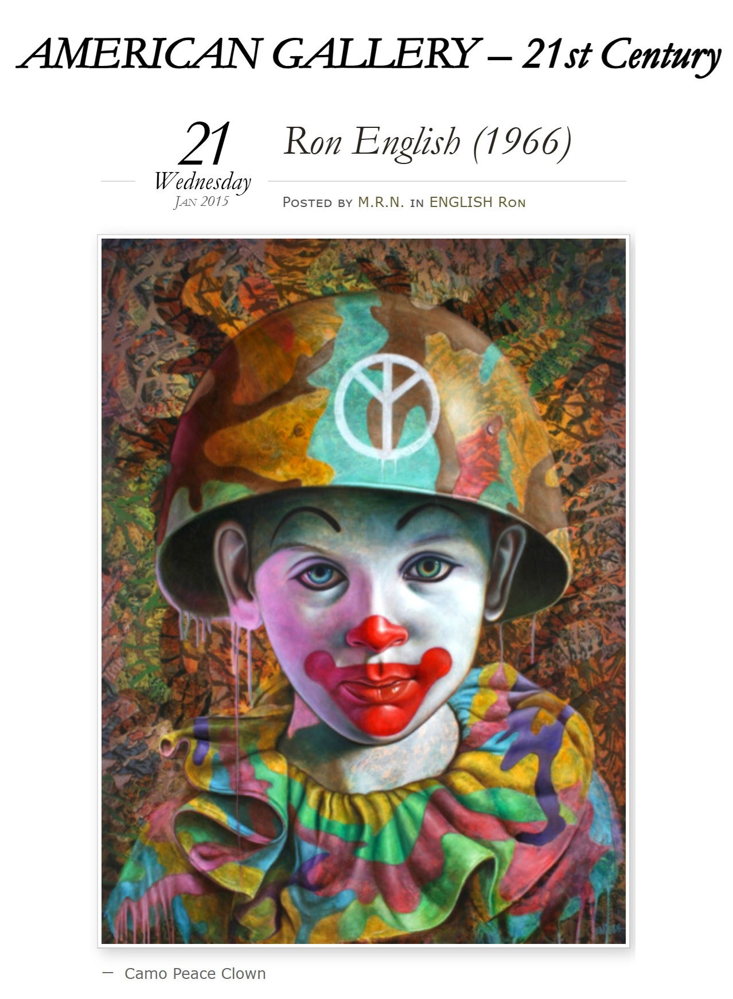

Exhibitions
Immortal Underground, Opera Gallery, New York, New York, US, November 2009.
Literature
Ron English, Death and the Eternal Forever (London: Korero Press, 2014), p. 99. ISBN 978-0957664920.

Ron English, Status Factory: The Art of Ron English (San Francisco: Last Gasp of San Francisco, 2014), p. 38. ISBN 978-0867197891.

Ron English, Original Grin: The Art of Ron English (Paris: Cernunnos, 2019), p. 116. ISBN 978-2374950938.

London Street Art Desing, “Ron English”, LSD Magazine, no. 4, 2016, p. 87.

London Street Art Desing, “Ron English”, LSD Magazine, no. 4, 2016, p. 87.

Блинцов, “Ron English поп-арт, клоунада и стёб”, Art Assorty, January 23, 2013.

Notes
This work appears on the cover of Vandalism Starter Kit.
Ancillary Documentation






Selected Online Circulation
Selected examples of the work’s online circulation, reproduction, or discussion. This list is not exhaustive; it is intended to document representative appearances of the image beyond formal exhibition and publication records.